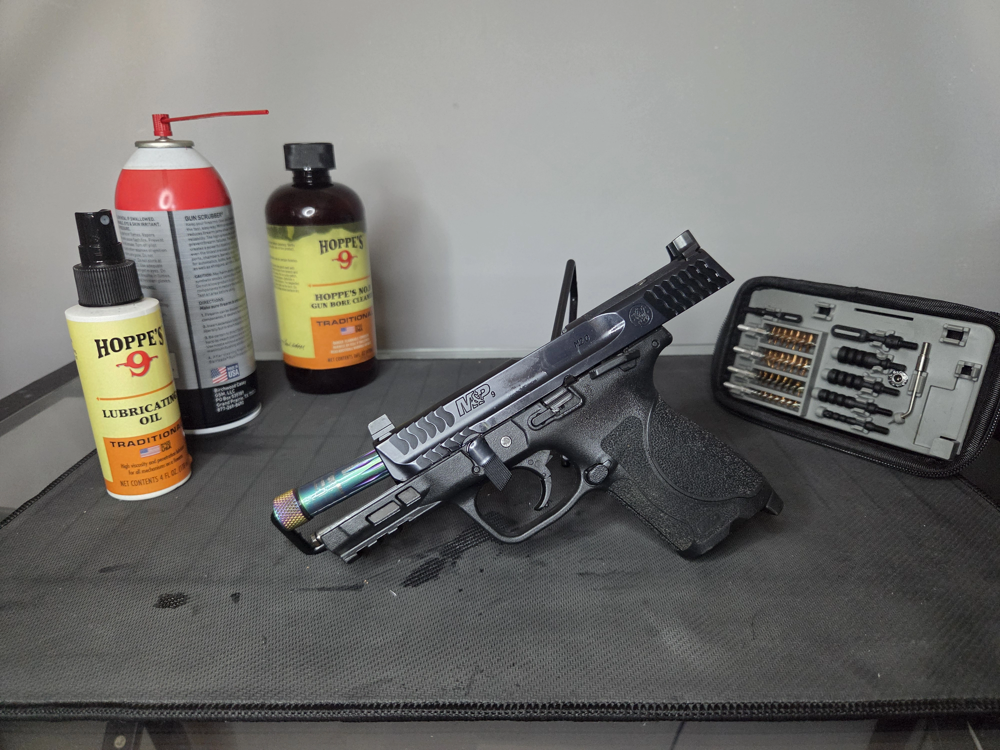

Owners Manual
Use owners manual to help with resassembly of firearm. If one is not available, utilize pictures taken during the disassembly.
Inspect every piece for excessive wear or damage, these parts may need to be replaced.

Use owners manual to help with resassembly of firearm. If one is not available, utilize pictures taken during the disassembly.
Make sure the barrel lug sits properly toward the rear and locks into position. Ensure the recoil spring guide rod is centered on the barrel notch without binding or pinching.
Line up the slide cutouts/notches carefully with the frame rails before pushing the slide backward. Next return the takedown or disassembly lever to its locked or original position.